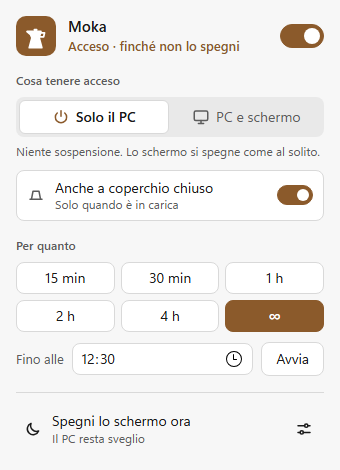
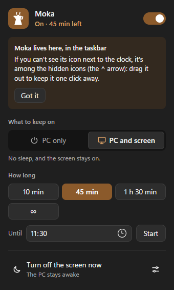

Moka
Moka
Il PC resta sveglio finché serve a te
Un clic nella tray e Windows non va in sospensione: per un'ora, fino alle 18:30, finché non lo spegni. Anche lo schermo, se vuoi. Anche a coperchio chiuso, se è un portatile. Poi, se vuoi, lo spegne lui.
Your PC stays awake for as long as you need
One click in the tray and Windows won't go to sleep: for an hour, until 6:30 pm, until you turn it off. The screen too, if you like. Even with the lid closed, on a laptop. And then, if you want, it turns the PC off for you.
Windows 10 e 11, 64 bit · gratis e open source, licenza MIT Windows 10 and 11, 64-bit · free and open source, MIT license


Cosa fa
- Solo il PC, o anche lo schermoNiente sospensione; e se serve, nemmeno lo schermo che si spegne. Oppure spegni subito lo schermo e lascia sveglio il PC.
- Per quanto vuoi15 minuti, 4 ore, fino alle 18:30 o finché non lo spegni. Le durate rapide le scegli tu.
- …e poiA fine sessione può spegnere lo schermo, bloccare, sospendere, ibernare o spegnere il PC, sempre dopo un conto alla rovescia annullabile. Cinque minuti prima ti avvisa, con un «+30 min».
- Regole automaticheSveglio mentre un programma è aperto, sei in chiamata, guardi un video a schermo intero, scarichi un file o il processore lavora; in carica, con il monitor esterno o in una fascia oraria. Il pannello dice sempre perché è acceso, e le regole si sospendono con un clic.
- Anche a coperchio chiusoSui portatili, solo in carica o anche a batteria, con la modalità scrivania per il monitor esterno e una protezione se il portatile finisce chiuso in una borsa. L'impostazione di Windows torna sempre com'era, anche se Moka si chiudesse di colpo.
- Batteria al sicuroSotto la carica che scegli, la sessione finisce da sola e te lo dice.
- Tasti rapidi e riga di comandoAccendi e spegni senza toccare il mouse, o da uno script:
moka --for 2h --then sleep. - Tutto sul tuo PCNessun account, nessun cloud, nessuna telemetria. L'unica connessione è il controllo degli aggiornamenti, una volta al giorno.
What it does
- PC only, or the screen tooNo sleep; and if you need it, no screen turning off either. Or turn off the screen right now and keep the PC awake.
- For as long as you want15 minutes, 4 hours, until 6:30 pm or until you turn it off. You choose the quick durations.
- …and thenAt the end of a session it can turn off the screen, lock, sleep, hibernate or shut down the PC, always after a countdown you can cancel. Five minutes before, it warns you, with a “+30 min”.
- Automatic rulesAwake while a program is open, you're in a call, a video is full screen, a file is downloading or the processor is working; while charging, with an external monitor or during a time window. The panel always says why it's on, and rules pause with one click.
- Even with the lid closedOn laptops, only while plugged in or on battery too, with a desk mode for an external monitor and a protection in case the laptop ends up closed in a bag. The Windows setting always goes back as it was, even if Moka closed abruptly.
- Battery kept safeBelow the charge you choose, the session ends on its own and tells you.
- Shortcuts and command lineTurn it on and off without touching the mouse, or from a script:
moka --for 2h --then sleep. - Everything stays on your PCNo account, no cloud, no telemetry. The only connection is the update check, once a day.
Riga di comandoCommand line
moka --for 2h # sveglio per 2 ore# awake for 2 hours
moka --until 18:30 # fino alle 18:30# until 18:30
moka --screen # anche lo schermo# the screen too
moka --then sleep # a fine sessione: sospendi# at the end: sleep
moka --lid # anche a coperchio chiuso# with the lid closed too
moka --while ffmpeg.exe # finché gira ffmpeg# while ffmpeg runs
moka --off # spegni# turn off